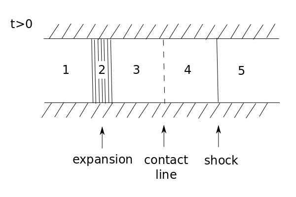

Sod Shock Tube¶
Context¶
The Sod shock tube problem is a classic test of the code’s ability to handle discontinuities (i.e. shocks) and trace their propagation. This is a simple example of a Riemann problem, which is essentially just an initial-value problem for which we have a conservation equation subject to a piecewise discontinuous constant initial condition. In the case of the Sod shock tube, this amounts to having a fluid separated into two constant states, separated by some boundary/diaphragm across which the density and pressure are discontinuous. Formally, this can be written:
and
where the subscripts correspond to the ‘left’ and ‘right’ sides of the boundary at \(x=x_\mathrm{crit}\). Generally, we will define \(P_L\) and \(P_R\) such that \(P_R < P_L\). The following figure of the initial setup (\(t=0\)) for the 1D shock tube.

At \(t=0\), the diaphragm is removed, and, because the fluid is initially at rest, this will initiate a flow from the higher pressure (left) to lower pressure (right) region. Conceptually, in an attempt to equalize te pressure, the fluid on the left will expand and flow into the right section, compressing the fluid there. This rarefaction occurs in a region known as the ‘expansion fan’ (2 in the diagram) that proceeds to the left, and, similarly, the compression proceeds to the right as a ‘shock front’ (the line separating 4 and 5 in the diagram). There is a ‘boundary’ between these two regions (the expanding and compressing fluids) across which the state variables of the fluid are discontinuous – this is the source of the difficulty for the code and is why this provides a good test. The following figure is a schematic visualization of what the aforementioned process looks like at \(t>0\).

Functionally, we need to solve the Euler equations to trace the evolution of the system over time and this corresponds to the aforementioned Riemann problem that we are solving. First, the Euler equations can be written in matrix form as follows (assuming no external body forces):
where the first equation is the continuity equation, the second is momentum conservation/the ‘Euler’ equation (flux of momentum density has an ordered component and pressure/random motion component), and the third is the energy conservation equation (energy flux similarly has a bulk transport component and pressure-driven component). In these equations, \(\rho\) is the density, \(P\) is the pressure, \(E\) is the energy, and \(v\) is the average velocity. In order to close the system, we need to specify an equation of state, so here we choose the polytropic EOS for an ideal gas, with \(\gamma = 1.4\) (the ratio of specific heats is that of air).
Using expressions derived from the characteristic form of the Euler equations (such as the Riemann invariants and the Rankine-Hugoniot shock jump conditions), we can relate the fluid quantities on either side of the shock, the expansion fan, and the contact discontinuity. With a lot of algebra, one can derive an implicit expression for the ratio of the known \(p_1\) and \(p_5\) pressures on either side of the diaphragm initially in terms of the ratio of unknown pressures \(p_3\) and \(p_4\) on either side of the contact. This can be solved iteratively, but this is often expensive, so we can use codes, such as this one, to approximate the solution more efficiently.
Using the code¶
In any case, this is the perfect example of a situation where the code can be used to solve this Riemann problem. First, we can import phd.
[1]:
import phd
import numpy as np
Now we need to set-up our particle grid. Here, we will be producing a two-dimensional grid of particles with the HydroParticleCreator method but for convenience, can package it all into a single method as below. This is useful if we were to, for example, initialize the code in parallel, rather than serial, as we can feed the create_particles method in as an argument to the distribute_initial_particles method. However, for our purposes, the serial implementation is sufficient, so
distribute_initial_particles simply reduces to the method we have defined below. If we wanted to run the code in parallel, however, it would suffice to bundle all these code blocks into a single python program and use the command
mpirun -n 4 python your_program_name.py
for example and this implementation should work just fine.
For specific values, we have chosen to take \(\rho_L = 1\), \(\rho_R = 0.125\), \(P_L = 1\), \(P_R = 0.1\), and the initial velocity is 0 in both the \(x\) and \(y\) directions.
[2]:
def create_particles(dim=2, nx=100, Lx=1.0, diaphragm=0.5, gamma=1.4):
dx = Lx/nx # spacing between particles
n = nx*nx # number of particles
# create particle container
particles = phd.HydroParticleCreator(n, dim=2)
part = 0
for i in range(nx):
for j in range(nx):
particles["position-x"][part] = (i+0.5)*dx
particles["position-y"][part] = (j+0.5)*dx
particles["ids"][part] = part
part += 1
# set ambient values
particles["density"][:] = 1.0 # rho_L
particles["pressure"][:] = 1.0 # P_L
particles["velocity-x"][:] = 0.0
particles["velocity-y"][:] = 0.0
cells = particles["position-x"] > diaphragm # subset of particles to the right of the 'diaphragm'
particles["density"][cells] = 0.125 # rho_R
particles["pressure"][cells] = 0.1 # P_R
return particles
dim = 2; gamma = 1.4 # specify dimension and specific heat ratio
# useful for parallelizing the implementation, in serial, this does nothing
particles = phd.distribute_initial_particles(create_particles, dim=dim, gamma=gamma)
Next, we can specify the domain, construct the mesh, initialize the integrator object, set the stopping conditions, and specify the outputs we want to receive.
[3]:
# computation related to boundaries
domain_manager = phd.DomainManager(
xmin=[0., 0.], xmax=[1., 1.],
initial_radius=0.1)
# create voronoi mesh
mesh = phd.Mesh(regularize=False)
# computation
integrator = phd.MovingMeshMUSCLHancock()
integrator.set_mesh(mesh)
integrator.set_riemann(phd.HLLC())
integrator.set_particles(particles)
integrator.set_domain_manager(domain_manager)
integrator.set_boundary_condition(phd.Reflective())
integrator.set_reconstruction(phd.PieceWiseLinear())
integrator.set_equation_state(phd.IdealGas(gamma=gamma))
sim_name = "sod"
# if the code has been initialized in parallel
if phd._in_parallel:
integrator.set_load_balance(phd.LoadBalance())
sim_name = "mpi_sod"
# add finish criteria
simulation_time_manager = phd.SimulationTimeManager()
simulation_time_manager.add_finish(phd.Time(time_max=0.15))
# output last step
output = phd.FinalOutput()
output.set_writer(phd.Hdf5())
simulation_time_manager.add_output(output)
Finally, we can create the simulation and let it run.
[4]:
# Create simulator
simulation = phd.Simulation(simulation_name=sim_name)
simulation.set_integrator(integrator)
simulation.set_simulation_time_manager(simulation_time_manager)
simulation.initialize()
simulation.solve()
phd: [INFO ] 2021-03-08 17:56:18,576:
__________.__ .___
\______ \ |__ __| _/
| ___/ | \ / __ |
| | | Y \/ /_/ |
|____| |___| /\____ |
\/ \/
Welcome to Python Hydro-Dynamics!
Simulation Information
------------------------------
Running in serial
Log file saved at: sod.log
Problem solving: sod
Output data will be saved at: sod_output
Classes used in the simulation
------------------------------
boundary_condition: Reflective
domain_manager: DomainManager
equation_state: IdealGas
integrator: MovingMeshMUSCLHancock
mesh: Mesh
particles: CarrayContainer
reconstruction: PieceWiseLinear
riemann: HLLC
phd: [INFO ] 2021-03-08 17:56:18,578: IntegrateBase: Building initial mesh
phd: [INFO ] 2021-03-08 17:56:18,580: Mesh: Starting mesh creation
phd: [INFO ] 2021-03-08 17:56:18,726: Beginning integration loop
phd: [INFO ] 2021-03-08 17:56:18,727: Hydro dt: 0.002384
phd: [INFO ] 2021-03-08 17:56:18,728: Starting iteration: 0 time: 0.000000 dt: 0.002384
phd: [INFO ] 2021-03-08 17:56:18,728: MovingMeshMUSCLHancock: Starting integration
phd: [INFO ] 2021-03-08 17:56:18,733: PieceWiseLinear: Starting gradient cacluation
phd: [INFO ] 2021-03-08 17:56:18,761: PieceWiseLinear: Starting spatial reconstruction
phd: [INFO ] 2021-03-08 17:56:18,766: PieceWiseLinear: Starting temporal reconstruction
phd: [INFO ] 2021-03-08 17:56:18,770: HLLC: Starting riemann
phd: [INFO ] 2021-03-08 17:56:18,775: Mesh: Starting mesh creation
phd: [INFO ] 2021-03-08 17:56:18,881: Hydro dt: 0.002384
phd: [INFO ] 2021-03-08 17:56:18,881: Starting iteration: 1 time: 0.002384 dt: 0.002384
phd: [INFO ] 2021-03-08 17:56:18,881: MovingMeshMUSCLHancock: Starting integration
phd: [INFO ] 2021-03-08 17:56:18,886: PieceWiseLinear: Starting gradient cacluation
phd: [INFO ] 2021-03-08 17:56:18,914: PieceWiseLinear: Starting spatial reconstruction
phd: [INFO ] 2021-03-08 17:56:18,920: PieceWiseLinear: Starting temporal reconstruction
phd: [INFO ] 2021-03-08 17:56:18,923: HLLC: Starting riemann
phd: [INFO ] 2021-03-08 17:56:18,928: Mesh: Starting mesh creation
phd: [INFO ] 2021-03-08 17:56:19,022: Hydro dt: 0.002384
phd: [INFO ] 2021-03-08 17:56:19,023: Starting iteration: 2 time: 0.004768 dt: 0.002384
phd: [INFO ] 2021-03-08 17:56:19,023: MovingMeshMUSCLHancock: Starting integration
phd: [INFO ] 2021-03-08 17:56:19,028: PieceWiseLinear: Starting gradient cacluation
phd: [INFO ] 2021-03-08 17:56:19,056: PieceWiseLinear: Starting spatial reconstruction
phd: [INFO ] 2021-03-08 17:56:19,062: PieceWiseLinear: Starting temporal reconstruction
phd: [INFO ] 2021-03-08 17:56:19,066: HLLC: Starting riemann
phd: [INFO ] 2021-03-08 17:56:19,071: Mesh: Starting mesh creation
phd: [INFO ] 2021-03-08 17:56:19,164: Hydro dt: 0.002325
phd: [INFO ] 2021-03-08 17:56:19,165: Starting iteration: 3 time: 0.007152 dt: 0.002325
phd: [INFO ] 2021-03-08 17:56:19,165: MovingMeshMUSCLHancock: Starting integration
phd: [INFO ] 2021-03-08 17:56:19,170: PieceWiseLinear: Starting gradient cacluation
phd: [INFO ] 2021-03-08 17:56:19,199: PieceWiseLinear: Starting spatial reconstruction
phd: [INFO ] 2021-03-08 17:56:19,205: PieceWiseLinear: Starting temporal reconstruction
phd: [INFO ] 2021-03-08 17:56:19,208: HLLC: Starting riemann
phd: [INFO ] 2021-03-08 17:56:19,214: Mesh: Starting mesh creation
phd: [INFO ] 2021-03-08 17:56:19,312: Hydro dt: 0.002127
phd: [INFO ] 2021-03-08 17:56:19,313: Starting iteration: 4 time: 0.009478 dt: 0.002127
phd: [INFO ] 2021-03-08 17:56:19,313: MovingMeshMUSCLHancock: Starting integration
phd: [INFO ] 2021-03-08 17:56:19,319: PieceWiseLinear: Starting gradient cacluation
phd: [INFO ] 2021-03-08 17:56:19,348: PieceWiseLinear: Starting spatial reconstruction
phd: [INFO ] 2021-03-08 17:56:19,354: PieceWiseLinear: Starting temporal reconstruction
phd: [INFO ] 2021-03-08 17:56:19,358: HLLC: Starting riemann
phd: [INFO ] 2021-03-08 17:56:19,364: Mesh: Starting mesh creation
phd: [INFO ] 2021-03-08 17:56:19,461: Hydro dt: 0.001949
phd: [INFO ] 2021-03-08 17:56:19,461: Starting iteration: 5 time: 0.011605 dt: 0.001949
phd: [INFO ] 2021-03-08 17:56:19,462: MovingMeshMUSCLHancock: Starting integration
phd: [INFO ] 2021-03-08 17:56:19,467: PieceWiseLinear: Starting gradient cacluation
phd: [INFO ] 2021-03-08 17:56:19,496: PieceWiseLinear: Starting spatial reconstruction
phd: [INFO ] 2021-03-08 17:56:19,502: PieceWiseLinear: Starting temporal reconstruction
phd: [INFO ] 2021-03-08 17:56:19,506: HLLC: Starting riemann
phd: [INFO ] 2021-03-08 17:56:19,511: Mesh: Starting mesh creation
phd: [INFO ] 2021-03-08 17:56:19,608: Hydro dt: 0.001800
phd: [INFO ] 2021-03-08 17:56:19,608: Starting iteration: 6 time: 0.013553 dt: 0.001800
phd: [INFO ] 2021-03-08 17:56:19,609: MovingMeshMUSCLHancock: Starting integration
phd: [INFO ] 2021-03-08 17:56:19,614: PieceWiseLinear: Starting gradient cacluation
phd: [INFO ] 2021-03-08 17:56:19,643: PieceWiseLinear: Starting spatial reconstruction
phd: [INFO ] 2021-03-08 17:56:19,649: PieceWiseLinear: Starting temporal reconstruction
phd: [INFO ] 2021-03-08 17:56:19,653: HLLC: Starting riemann
phd: [INFO ] 2021-03-08 17:56:19,659: Mesh: Starting mesh creation
phd: [INFO ] 2021-03-08 17:56:19,754: Hydro dt: 0.001681
phd: [INFO ] 2021-03-08 17:56:19,754: Starting iteration: 7 time: 0.015353 dt: 0.001681
phd: [INFO ] 2021-03-08 17:56:19,754: MovingMeshMUSCLHancock: Starting integration
phd: [INFO ] 2021-03-08 17:56:19,759: PieceWiseLinear: Starting gradient cacluation
phd: [INFO ] 2021-03-08 17:56:19,789: PieceWiseLinear: Starting spatial reconstruction
phd: [INFO ] 2021-03-08 17:56:19,795: PieceWiseLinear: Starting temporal reconstruction
phd: [INFO ] 2021-03-08 17:56:19,798: HLLC: Starting riemann
phd: [INFO ] 2021-03-08 17:56:19,804: Mesh: Starting mesh creation
phd: [INFO ] 2021-03-08 17:56:19,901: Hydro dt: 0.001595
phd: [INFO ] 2021-03-08 17:56:19,901: Starting iteration: 8 time: 0.017034 dt: 0.001595
phd: [INFO ] 2021-03-08 17:56:19,902: MovingMeshMUSCLHancock: Starting integration
phd: [INFO ] 2021-03-08 17:56:19,907: PieceWiseLinear: Starting gradient cacluation
phd: [INFO ] 2021-03-08 17:56:19,939: PieceWiseLinear: Starting spatial reconstruction
phd: [INFO ] 2021-03-08 17:56:19,945: PieceWiseLinear: Starting temporal reconstruction
phd: [INFO ] 2021-03-08 17:56:19,949: HLLC: Starting riemann
phd: [INFO ] 2021-03-08 17:56:19,956: Mesh: Starting mesh creation
phd: [INFO ] 2021-03-08 17:56:20,053: Hydro dt: 0.001539
phd: [INFO ] 2021-03-08 17:56:20,054: Starting iteration: 9 time: 0.018629 dt: 0.001539
phd: [INFO ] 2021-03-08 17:56:20,054: MovingMeshMUSCLHancock: Starting integration
phd: [INFO ] 2021-03-08 17:56:20,059: PieceWiseLinear: Starting gradient cacluation
phd: [INFO ] 2021-03-08 17:56:20,088: PieceWiseLinear: Starting spatial reconstruction
phd: [INFO ] 2021-03-08 17:56:20,094: PieceWiseLinear: Starting temporal reconstruction
phd: [INFO ] 2021-03-08 17:56:20,097: HLLC: Starting riemann
phd: [INFO ] 2021-03-08 17:56:20,104: Mesh: Starting mesh creation
phd: [INFO ] 2021-03-08 17:56:20,199: Hydro dt: 0.001506
phd: [INFO ] 2021-03-08 17:56:20,200: Starting iteration: 10 time: 0.020168 dt: 0.001506
phd: [INFO ] 2021-03-08 17:56:20,200: MovingMeshMUSCLHancock: Starting integration
phd: [INFO ] 2021-03-08 17:56:20,205: PieceWiseLinear: Starting gradient cacluation
phd: [INFO ] 2021-03-08 17:56:20,234: PieceWiseLinear: Starting spatial reconstruction
phd: [INFO ] 2021-03-08 17:56:20,241: PieceWiseLinear: Starting temporal reconstruction
phd: [INFO ] 2021-03-08 17:56:20,244: HLLC: Starting riemann
phd: [INFO ] 2021-03-08 17:56:20,250: Mesh: Starting mesh creation
phd: [INFO ] 2021-03-08 17:56:20,347: Hydro dt: 0.001487
phd: [INFO ] 2021-03-08 17:56:20,348: Starting iteration: 11 time: 0.021674 dt: 0.001487
phd: [INFO ] 2021-03-08 17:56:20,348: MovingMeshMUSCLHancock: Starting integration
phd: [INFO ] 2021-03-08 17:56:20,353: PieceWiseLinear: Starting gradient cacluation
phd: [INFO ] 2021-03-08 17:56:20,382: PieceWiseLinear: Starting spatial reconstruction
phd: [INFO ] 2021-03-08 17:56:20,388: PieceWiseLinear: Starting temporal reconstruction
phd: [INFO ] 2021-03-08 17:56:20,392: HLLC: Starting riemann
phd: [INFO ] 2021-03-08 17:56:20,397: Mesh: Starting mesh creation
phd: [INFO ] 2021-03-08 17:56:20,498: Hydro dt: 0.001478
phd: [INFO ] 2021-03-08 17:56:20,498: Starting iteration: 12 time: 0.023161 dt: 0.001478
phd: [INFO ] 2021-03-08 17:56:20,499: MovingMeshMUSCLHancock: Starting integration
phd: [INFO ] 2021-03-08 17:56:20,504: PieceWiseLinear: Starting gradient cacluation
phd: [INFO ] 2021-03-08 17:56:20,532: PieceWiseLinear: Starting spatial reconstruction
phd: [INFO ] 2021-03-08 17:56:20,538: PieceWiseLinear: Starting temporal reconstruction
phd: [INFO ] 2021-03-08 17:56:20,542: HLLC: Starting riemann
phd: [INFO ] 2021-03-08 17:56:20,548: Mesh: Starting mesh creation
phd: [INFO ] 2021-03-08 17:56:20,646: Hydro dt: 0.001477
phd: [INFO ] 2021-03-08 17:56:20,647: Starting iteration: 13 time: 0.024639 dt: 0.001477
phd: [INFO ] 2021-03-08 17:56:20,647: MovingMeshMUSCLHancock: Starting integration
phd: [INFO ] 2021-03-08 17:56:20,653: PieceWiseLinear: Starting gradient cacluation
phd: [INFO ] 2021-03-08 17:56:20,683: PieceWiseLinear: Starting spatial reconstruction
phd: [INFO ] 2021-03-08 17:56:20,689: PieceWiseLinear: Starting temporal reconstruction
phd: [INFO ] 2021-03-08 17:56:20,692: HLLC: Starting riemann
phd: [INFO ] 2021-03-08 17:56:20,698: Mesh: Starting mesh creation
phd: [INFO ] 2021-03-08 17:56:20,793: Hydro dt: 0.001480
phd: [INFO ] 2021-03-08 17:56:20,794: Starting iteration: 14 time: 0.026116 dt: 0.001480
phd: [INFO ] 2021-03-08 17:56:20,794: MovingMeshMUSCLHancock: Starting integration
phd: [INFO ] 2021-03-08 17:56:20,799: PieceWiseLinear: Starting gradient cacluation
phd: [INFO ] 2021-03-08 17:56:20,830: PieceWiseLinear: Starting spatial reconstruction
phd: [INFO ] 2021-03-08 17:56:20,837: PieceWiseLinear: Starting temporal reconstruction
phd: [INFO ] 2021-03-08 17:56:20,840: HLLC: Starting riemann
phd: [INFO ] 2021-03-08 17:56:20,846: Mesh: Starting mesh creation
phd: [INFO ] 2021-03-08 17:56:20,945: Hydro dt: 0.001483
phd: [INFO ] 2021-03-08 17:56:20,945: Starting iteration: 15 time: 0.027596 dt: 0.001483
phd: [INFO ] 2021-03-08 17:56:20,946: MovingMeshMUSCLHancock: Starting integration
phd: [INFO ] 2021-03-08 17:56:20,951: PieceWiseLinear: Starting gradient cacluation
phd: [INFO ] 2021-03-08 17:56:20,981: PieceWiseLinear: Starting spatial reconstruction
phd: [INFO ] 2021-03-08 17:56:20,988: PieceWiseLinear: Starting temporal reconstruction
phd: [INFO ] 2021-03-08 17:56:20,991: HLLC: Starting riemann
phd: [INFO ] 2021-03-08 17:56:20,997: Mesh: Starting mesh creation
phd: [INFO ] 2021-03-08 17:56:21,093: Hydro dt: 0.001487
phd: [INFO ] 2021-03-08 17:56:21,094: Starting iteration: 16 time: 0.029079 dt: 0.001487
phd: [INFO ] 2021-03-08 17:56:21,094: MovingMeshMUSCLHancock: Starting integration
phd: [INFO ] 2021-03-08 17:56:21,099: PieceWiseLinear: Starting gradient cacluation
phd: [INFO ] 2021-03-08 17:56:21,133: PieceWiseLinear: Starting spatial reconstruction
phd: [INFO ] 2021-03-08 17:56:21,139: PieceWiseLinear: Starting temporal reconstruction
phd: [INFO ] 2021-03-08 17:56:21,143: HLLC: Starting riemann
phd: [INFO ] 2021-03-08 17:56:21,148: Mesh: Starting mesh creation
phd: [INFO ] 2021-03-08 17:56:21,244: Hydro dt: 0.001489
phd: [INFO ] 2021-03-08 17:56:21,244: Starting iteration: 17 time: 0.030566 dt: 0.001489
phd: [INFO ] 2021-03-08 17:56:21,244: MovingMeshMUSCLHancock: Starting integration
phd: [INFO ] 2021-03-08 17:56:21,249: PieceWiseLinear: Starting gradient cacluation
phd: [INFO ] 2021-03-08 17:56:21,278: PieceWiseLinear: Starting spatial reconstruction
phd: [INFO ] 2021-03-08 17:56:21,284: PieceWiseLinear: Starting temporal reconstruction
phd: [INFO ] 2021-03-08 17:56:21,287: HLLC: Starting riemann
phd: [INFO ] 2021-03-08 17:56:21,293: Mesh: Starting mesh creation
phd: [INFO ] 2021-03-08 17:56:21,385: Hydro dt: 0.001490
phd: [INFO ] 2021-03-08 17:56:21,385: Starting iteration: 18 time: 0.032055 dt: 0.001490
phd: [INFO ] 2021-03-08 17:56:21,385: MovingMeshMUSCLHancock: Starting integration
phd: [INFO ] 2021-03-08 17:56:21,390: PieceWiseLinear: Starting gradient cacluation
phd: [INFO ] 2021-03-08 17:56:21,418: PieceWiseLinear: Starting spatial reconstruction
phd: [INFO ] 2021-03-08 17:56:21,425: PieceWiseLinear: Starting temporal reconstruction
phd: [INFO ] 2021-03-08 17:56:21,428: HLLC: Starting riemann
phd: [INFO ] 2021-03-08 17:56:21,433: Mesh: Starting mesh creation
phd: [INFO ] 2021-03-08 17:56:21,524: Hydro dt: 0.001491
phd: [INFO ] 2021-03-08 17:56:21,525: Starting iteration: 19 time: 0.033546 dt: 0.001491
phd: [INFO ] 2021-03-08 17:56:21,525: MovingMeshMUSCLHancock: Starting integration
phd: [INFO ] 2021-03-08 17:56:21,530: PieceWiseLinear: Starting gradient cacluation
phd: [INFO ] 2021-03-08 17:56:21,559: PieceWiseLinear: Starting spatial reconstruction
phd: [INFO ] 2021-03-08 17:56:21,565: PieceWiseLinear: Starting temporal reconstruction
phd: [INFO ] 2021-03-08 17:56:21,568: HLLC: Starting riemann
phd: [INFO ] 2021-03-08 17:56:21,574: Mesh: Starting mesh creation
phd: [INFO ] 2021-03-08 17:56:21,664: Hydro dt: 0.001488
phd: [INFO ] 2021-03-08 17:56:21,665: Starting iteration: 20 time: 0.035037 dt: 0.001488
phd: [INFO ] 2021-03-08 17:56:21,665: MovingMeshMUSCLHancock: Starting integration
phd: [INFO ] 2021-03-08 17:56:21,670: PieceWiseLinear: Starting gradient cacluation
phd: [INFO ] 2021-03-08 17:56:21,699: PieceWiseLinear: Starting spatial reconstruction
phd: [INFO ] 2021-03-08 17:56:21,705: PieceWiseLinear: Starting temporal reconstruction
phd: [INFO ] 2021-03-08 17:56:21,708: HLLC: Starting riemann
phd: [INFO ] 2021-03-08 17:56:21,714: Mesh: Starting mesh creation
phd: [INFO ] 2021-03-08 17:56:21,806: Hydro dt: 0.001489
phd: [INFO ] 2021-03-08 17:56:21,806: Starting iteration: 21 time: 0.036525 dt: 0.001489
phd: [INFO ] 2021-03-08 17:56:21,806: MovingMeshMUSCLHancock: Starting integration
phd: [INFO ] 2021-03-08 17:56:21,811: PieceWiseLinear: Starting gradient cacluation
phd: [INFO ] 2021-03-08 17:56:21,841: PieceWiseLinear: Starting spatial reconstruction
phd: [INFO ] 2021-03-08 17:56:21,867: PieceWiseLinear: Starting temporal reconstruction
phd: [INFO ] 2021-03-08 17:56:21,871: HLLC: Starting riemann
phd: [INFO ] 2021-03-08 17:56:21,876: Mesh: Starting mesh creation
phd: [INFO ] 2021-03-08 17:56:21,970: Hydro dt: 0.001492
phd: [INFO ] 2021-03-08 17:56:21,971: Starting iteration: 22 time: 0.038014 dt: 0.001492
phd: [INFO ] 2021-03-08 17:56:21,971: MovingMeshMUSCLHancock: Starting integration
phd: [INFO ] 2021-03-08 17:56:21,976: PieceWiseLinear: Starting gradient cacluation
phd: [INFO ] 2021-03-08 17:56:22,004: PieceWiseLinear: Starting spatial reconstruction
phd: [INFO ] 2021-03-08 17:56:22,010: PieceWiseLinear: Starting temporal reconstruction
phd: [INFO ] 2021-03-08 17:56:22,013: HLLC: Starting riemann
phd: [INFO ] 2021-03-08 17:56:22,019: Mesh: Starting mesh creation
phd: [INFO ] 2021-03-08 17:56:22,117: Hydro dt: 0.001495
phd: [INFO ] 2021-03-08 17:56:22,117: Starting iteration: 23 time: 0.039505 dt: 0.001495
phd: [INFO ] 2021-03-08 17:56:22,117: MovingMeshMUSCLHancock: Starting integration
phd: [INFO ] 2021-03-08 17:56:22,122: PieceWiseLinear: Starting gradient cacluation
phd: [INFO ] 2021-03-08 17:56:22,151: PieceWiseLinear: Starting spatial reconstruction
phd: [INFO ] 2021-03-08 17:56:22,157: PieceWiseLinear: Starting temporal reconstruction
phd: [INFO ] 2021-03-08 17:56:22,160: HLLC: Starting riemann
phd: [INFO ] 2021-03-08 17:56:22,165: Mesh: Starting mesh creation
phd: [INFO ] 2021-03-08 17:56:22,258: Hydro dt: 0.001496
phd: [INFO ] 2021-03-08 17:56:22,259: Starting iteration: 24 time: 0.041000 dt: 0.001496
phd: [INFO ] 2021-03-08 17:56:22,259: MovingMeshMUSCLHancock: Starting integration
phd: [INFO ] 2021-03-08 17:56:22,264: PieceWiseLinear: Starting gradient cacluation
phd: [INFO ] 2021-03-08 17:56:22,293: PieceWiseLinear: Starting spatial reconstruction
phd: [INFO ] 2021-03-08 17:56:22,299: PieceWiseLinear: Starting temporal reconstruction
phd: [INFO ] 2021-03-08 17:56:22,303: HLLC: Starting riemann
phd: [INFO ] 2021-03-08 17:56:22,308: Mesh: Starting mesh creation
phd: [INFO ] 2021-03-08 17:56:22,398: Hydro dt: 0.001498
phd: [INFO ] 2021-03-08 17:56:22,399: Starting iteration: 25 time: 0.042497 dt: 0.001498
phd: [INFO ] 2021-03-08 17:56:22,399: MovingMeshMUSCLHancock: Starting integration
phd: [INFO ] 2021-03-08 17:56:22,404: PieceWiseLinear: Starting gradient cacluation
phd: [INFO ] 2021-03-08 17:56:22,433: PieceWiseLinear: Starting spatial reconstruction
phd: [INFO ] 2021-03-08 17:56:22,440: PieceWiseLinear: Starting temporal reconstruction
phd: [INFO ] 2021-03-08 17:56:22,443: HLLC: Starting riemann
phd: [INFO ] 2021-03-08 17:56:22,449: Mesh: Starting mesh creation
phd: [INFO ] 2021-03-08 17:56:22,539: Hydro dt: 0.001500
phd: [INFO ] 2021-03-08 17:56:22,539: Starting iteration: 26 time: 0.043995 dt: 0.001500
phd: [INFO ] 2021-03-08 17:56:22,540: MovingMeshMUSCLHancock: Starting integration
phd: [INFO ] 2021-03-08 17:56:22,545: PieceWiseLinear: Starting gradient cacluation
phd: [INFO ] 2021-03-08 17:56:22,573: PieceWiseLinear: Starting spatial reconstruction
phd: [INFO ] 2021-03-08 17:56:22,579: PieceWiseLinear: Starting temporal reconstruction
phd: [INFO ] 2021-03-08 17:56:22,582: HLLC: Starting riemann
phd: [INFO ] 2021-03-08 17:56:22,588: Mesh: Starting mesh creation
phd: [INFO ] 2021-03-08 17:56:22,679: Hydro dt: 0.001501
phd: [INFO ] 2021-03-08 17:56:22,680: Starting iteration: 27 time: 0.045495 dt: 0.001501
phd: [INFO ] 2021-03-08 17:56:22,680: MovingMeshMUSCLHancock: Starting integration
phd: [INFO ] 2021-03-08 17:56:22,685: PieceWiseLinear: Starting gradient cacluation
phd: [INFO ] 2021-03-08 17:56:22,714: PieceWiseLinear: Starting spatial reconstruction
phd: [INFO ] 2021-03-08 17:56:22,720: PieceWiseLinear: Starting temporal reconstruction
phd: [INFO ] 2021-03-08 17:56:22,723: HLLC: Starting riemann
phd: [INFO ] 2021-03-08 17:56:22,729: Mesh: Starting mesh creation
phd: [INFO ] 2021-03-08 17:56:22,826: Hydro dt: 0.001502
phd: [INFO ] 2021-03-08 17:56:22,826: Starting iteration: 28 time: 0.046996 dt: 0.001502
phd: [INFO ] 2021-03-08 17:56:22,827: MovingMeshMUSCLHancock: Starting integration
phd: [INFO ] 2021-03-08 17:56:22,832: PieceWiseLinear: Starting gradient cacluation
phd: [INFO ] 2021-03-08 17:56:22,860: PieceWiseLinear: Starting spatial reconstruction
phd: [INFO ] 2021-03-08 17:56:22,866: PieceWiseLinear: Starting temporal reconstruction
phd: [INFO ] 2021-03-08 17:56:22,870: HLLC: Starting riemann
phd: [INFO ] 2021-03-08 17:56:22,875: Mesh: Starting mesh creation
phd: [INFO ] 2021-03-08 17:56:22,973: Hydro dt: 0.001503
phd: [INFO ] 2021-03-08 17:56:22,973: Starting iteration: 29 time: 0.048498 dt: 0.001503
phd: [INFO ] 2021-03-08 17:56:22,974: MovingMeshMUSCLHancock: Starting integration
phd: [INFO ] 2021-03-08 17:56:22,979: PieceWiseLinear: Starting gradient cacluation
phd: [INFO ] 2021-03-08 17:56:23,008: PieceWiseLinear: Starting spatial reconstruction
phd: [INFO ] 2021-03-08 17:56:23,014: PieceWiseLinear: Starting temporal reconstruction
phd: [INFO ] 2021-03-08 17:56:23,017: HLLC: Starting riemann
phd: [INFO ] 2021-03-08 17:56:23,023: Mesh: Starting mesh creation
phd: [INFO ] 2021-03-08 17:56:23,120: Hydro dt: 0.001505
phd: [INFO ] 2021-03-08 17:56:23,120: Starting iteration: 30 time: 0.050002 dt: 0.001505
phd: [INFO ] 2021-03-08 17:56:23,120: MovingMeshMUSCLHancock: Starting integration
phd: [INFO ] 2021-03-08 17:56:23,125: PieceWiseLinear: Starting gradient cacluation
phd: [INFO ] 2021-03-08 17:56:23,156: PieceWiseLinear: Starting spatial reconstruction
phd: [INFO ] 2021-03-08 17:56:23,162: PieceWiseLinear: Starting temporal reconstruction
phd: [INFO ] 2021-03-08 17:56:23,165: HLLC: Starting riemann
phd: [INFO ] 2021-03-08 17:56:23,171: Mesh: Starting mesh creation
phd: [INFO ] 2021-03-08 17:56:23,265: Hydro dt: 0.001507
phd: [INFO ] 2021-03-08 17:56:23,265: Starting iteration: 31 time: 0.051507 dt: 0.001507
phd: [INFO ] 2021-03-08 17:56:23,266: MovingMeshMUSCLHancock: Starting integration
phd: [INFO ] 2021-03-08 17:56:23,271: PieceWiseLinear: Starting gradient cacluation
phd: [INFO ] 2021-03-08 17:56:23,299: PieceWiseLinear: Starting spatial reconstruction
phd: [INFO ] 2021-03-08 17:56:23,306: PieceWiseLinear: Starting temporal reconstruction
phd: [INFO ] 2021-03-08 17:56:23,309: HLLC: Starting riemann
phd: [INFO ] 2021-03-08 17:56:23,315: Mesh: Starting mesh creation
phd: [INFO ] 2021-03-08 17:56:23,408: Hydro dt: 0.001509
phd: [INFO ] 2021-03-08 17:56:23,408: Starting iteration: 32 time: 0.053014 dt: 0.001509
phd: [INFO ] 2021-03-08 17:56:23,409: MovingMeshMUSCLHancock: Starting integration
phd: [INFO ] 2021-03-08 17:56:23,414: PieceWiseLinear: Starting gradient cacluation
phd: [INFO ] 2021-03-08 17:56:23,442: PieceWiseLinear: Starting spatial reconstruction
phd: [INFO ] 2021-03-08 17:56:23,448: PieceWiseLinear: Starting temporal reconstruction
phd: [INFO ] 2021-03-08 17:56:23,452: HLLC: Starting riemann
phd: [INFO ] 2021-03-08 17:56:23,457: Mesh: Starting mesh creation
phd: [INFO ] 2021-03-08 17:56:23,550: Hydro dt: 0.001511
phd: [INFO ] 2021-03-08 17:56:23,551: Starting iteration: 33 time: 0.054523 dt: 0.001511
phd: [INFO ] 2021-03-08 17:56:23,551: MovingMeshMUSCLHancock: Starting integration
phd: [INFO ] 2021-03-08 17:56:23,556: PieceWiseLinear: Starting gradient cacluation
phd: [INFO ] 2021-03-08 17:56:23,584: PieceWiseLinear: Starting spatial reconstruction
phd: [INFO ] 2021-03-08 17:56:23,590: PieceWiseLinear: Starting temporal reconstruction
phd: [INFO ] 2021-03-08 17:56:23,593: HLLC: Starting riemann
phd: [INFO ] 2021-03-08 17:56:23,599: Mesh: Starting mesh creation
phd: [INFO ] 2021-03-08 17:56:23,690: Hydro dt: 0.001512
phd: [INFO ] 2021-03-08 17:56:23,690: Starting iteration: 34 time: 0.056033 dt: 0.001512
phd: [INFO ] 2021-03-08 17:56:23,690: MovingMeshMUSCLHancock: Starting integration
phd: [INFO ] 2021-03-08 17:56:23,695: PieceWiseLinear: Starting gradient cacluation
phd: [INFO ] 2021-03-08 17:56:23,723: PieceWiseLinear: Starting spatial reconstruction
phd: [INFO ] 2021-03-08 17:56:23,729: PieceWiseLinear: Starting temporal reconstruction
phd: [INFO ] 2021-03-08 17:56:23,733: HLLC: Starting riemann
phd: [INFO ] 2021-03-08 17:56:23,738: Mesh: Starting mesh creation
phd: [INFO ] 2021-03-08 17:56:23,828: Hydro dt: 0.001508
phd: [INFO ] 2021-03-08 17:56:23,828: Starting iteration: 35 time: 0.057545 dt: 0.001508
phd: [INFO ] 2021-03-08 17:56:23,829: MovingMeshMUSCLHancock: Starting integration
phd: [INFO ] 2021-03-08 17:56:23,833: PieceWiseLinear: Starting gradient cacluation
phd: [INFO ] 2021-03-08 17:56:23,862: PieceWiseLinear: Starting spatial reconstruction
phd: [INFO ] 2021-03-08 17:56:23,868: PieceWiseLinear: Starting temporal reconstruction
phd: [INFO ] 2021-03-08 17:56:23,872: HLLC: Starting riemann
phd: [INFO ] 2021-03-08 17:56:23,877: Mesh: Starting mesh creation
phd: [INFO ] 2021-03-08 17:56:23,970: Hydro dt: 0.001508
phd: [INFO ] 2021-03-08 17:56:23,970: Starting iteration: 36 time: 0.059054 dt: 0.001508
phd: [INFO ] 2021-03-08 17:56:23,971: MovingMeshMUSCLHancock: Starting integration
phd: [INFO ] 2021-03-08 17:56:23,976: PieceWiseLinear: Starting gradient cacluation
phd: [INFO ] 2021-03-08 17:56:24,004: PieceWiseLinear: Starting spatial reconstruction
phd: [INFO ] 2021-03-08 17:56:24,010: PieceWiseLinear: Starting temporal reconstruction
phd: [INFO ] 2021-03-08 17:56:24,013: HLLC: Starting riemann
phd: [INFO ] 2021-03-08 17:56:24,019: Mesh: Starting mesh creation
phd: [INFO ] 2021-03-08 17:56:24,109: Hydro dt: 0.001509
phd: [INFO ] 2021-03-08 17:56:24,110: Starting iteration: 37 time: 0.060562 dt: 0.001509
phd: [INFO ] 2021-03-08 17:56:24,110: MovingMeshMUSCLHancock: Starting integration
phd: [INFO ] 2021-03-08 17:56:24,115: PieceWiseLinear: Starting gradient cacluation
phd: [INFO ] 2021-03-08 17:56:24,144: PieceWiseLinear: Starting spatial reconstruction
phd: [INFO ] 2021-03-08 17:56:24,150: PieceWiseLinear: Starting temporal reconstruction
phd: [INFO ] 2021-03-08 17:56:24,153: HLLC: Starting riemann
phd: [INFO ] 2021-03-08 17:56:24,159: Mesh: Starting mesh creation
phd: [INFO ] 2021-03-08 17:56:24,248: Hydro dt: 0.001511
phd: [INFO ] 2021-03-08 17:56:24,249: Starting iteration: 38 time: 0.062071 dt: 0.001511
phd: [INFO ] 2021-03-08 17:56:24,249: MovingMeshMUSCLHancock: Starting integration
phd: [INFO ] 2021-03-08 17:56:24,254: PieceWiseLinear: Starting gradient cacluation
phd: [INFO ] 2021-03-08 17:56:24,286: PieceWiseLinear: Starting spatial reconstruction
phd: [INFO ] 2021-03-08 17:56:24,292: PieceWiseLinear: Starting temporal reconstruction
phd: [INFO ] 2021-03-08 17:56:24,296: HLLC: Starting riemann
phd: [INFO ] 2021-03-08 17:56:24,301: Mesh: Starting mesh creation
phd: [INFO ] 2021-03-08 17:56:24,394: Hydro dt: 0.001509
phd: [INFO ] 2021-03-08 17:56:24,395: Starting iteration: 39 time: 0.063582 dt: 0.001509
phd: [INFO ] 2021-03-08 17:56:24,395: MovingMeshMUSCLHancock: Starting integration
phd: [INFO ] 2021-03-08 17:56:24,400: PieceWiseLinear: Starting gradient cacluation
phd: [INFO ] 2021-03-08 17:56:24,429: PieceWiseLinear: Starting spatial reconstruction
phd: [INFO ] 2021-03-08 17:56:24,435: PieceWiseLinear: Starting temporal reconstruction
phd: [INFO ] 2021-03-08 17:56:24,438: HLLC: Starting riemann
phd: [INFO ] 2021-03-08 17:56:24,444: Mesh: Starting mesh creation
phd: [INFO ] 2021-03-08 17:56:24,540: Hydro dt: 0.001509
phd: [INFO ] 2021-03-08 17:56:24,541: Starting iteration: 40 time: 0.065091 dt: 0.001509
phd: [INFO ] 2021-03-08 17:56:24,541: MovingMeshMUSCLHancock: Starting integration
phd: [INFO ] 2021-03-08 17:56:24,546: PieceWiseLinear: Starting gradient cacluation
phd: [INFO ] 2021-03-08 17:56:24,575: PieceWiseLinear: Starting spatial reconstruction
phd: [INFO ] 2021-03-08 17:56:24,582: PieceWiseLinear: Starting temporal reconstruction
phd: [INFO ] 2021-03-08 17:56:24,585: HLLC: Starting riemann
phd: [INFO ] 2021-03-08 17:56:24,591: Mesh: Starting mesh creation
phd: [INFO ] 2021-03-08 17:56:24,684: Hydro dt: 0.001511
phd: [INFO ] 2021-03-08 17:56:24,684: Starting iteration: 41 time: 0.066601 dt: 0.001511
phd: [INFO ] 2021-03-08 17:56:24,684: MovingMeshMUSCLHancock: Starting integration
phd: [INFO ] 2021-03-08 17:56:24,690: PieceWiseLinear: Starting gradient cacluation
phd: [INFO ] 2021-03-08 17:56:24,718: PieceWiseLinear: Starting spatial reconstruction
phd: [INFO ] 2021-03-08 17:56:24,724: PieceWiseLinear: Starting temporal reconstruction
phd: [INFO ] 2021-03-08 17:56:24,728: HLLC: Starting riemann
phd: [INFO ] 2021-03-08 17:56:24,733: Mesh: Starting mesh creation
phd: [INFO ] 2021-03-08 17:56:24,827: Hydro dt: 0.001513
phd: [INFO ] 2021-03-08 17:56:24,828: Starting iteration: 42 time: 0.068112 dt: 0.001513
phd: [INFO ] 2021-03-08 17:56:24,828: MovingMeshMUSCLHancock: Starting integration
phd: [INFO ] 2021-03-08 17:56:24,833: PieceWiseLinear: Starting gradient cacluation
phd: [INFO ] 2021-03-08 17:56:24,862: PieceWiseLinear: Starting spatial reconstruction
phd: [INFO ] 2021-03-08 17:56:24,868: PieceWiseLinear: Starting temporal reconstruction
phd: [INFO ] 2021-03-08 17:56:24,871: HLLC: Starting riemann
phd: [INFO ] 2021-03-08 17:56:24,877: Mesh: Starting mesh creation
phd: [INFO ] 2021-03-08 17:56:24,969: Hydro dt: 0.001515
phd: [INFO ] 2021-03-08 17:56:24,970: Starting iteration: 43 time: 0.069625 dt: 0.001515
phd: [INFO ] 2021-03-08 17:56:24,970: MovingMeshMUSCLHancock: Starting integration
phd: [INFO ] 2021-03-08 17:56:24,975: PieceWiseLinear: Starting gradient cacluation
phd: [INFO ] 2021-03-08 17:56:25,005: PieceWiseLinear: Starting spatial reconstruction
phd: [INFO ] 2021-03-08 17:56:25,011: PieceWiseLinear: Starting temporal reconstruction
phd: [INFO ] 2021-03-08 17:56:25,015: HLLC: Starting riemann
phd: [INFO ] 2021-03-08 17:56:25,021: Mesh: Starting mesh creation
phd: [INFO ] 2021-03-08 17:56:25,117: Hydro dt: 0.001517
phd: [INFO ] 2021-03-08 17:56:25,118: Starting iteration: 44 time: 0.071139 dt: 0.001517
phd: [INFO ] 2021-03-08 17:56:25,118: MovingMeshMUSCLHancock: Starting integration
phd: [INFO ] 2021-03-08 17:56:25,123: PieceWiseLinear: Starting gradient cacluation
phd: [INFO ] 2021-03-08 17:56:25,152: PieceWiseLinear: Starting spatial reconstruction
phd: [INFO ] 2021-03-08 17:56:25,158: PieceWiseLinear: Starting temporal reconstruction
phd: [INFO ] 2021-03-08 17:56:25,161: HLLC: Starting riemann
phd: [INFO ] 2021-03-08 17:56:25,167: Mesh: Starting mesh creation
phd: [INFO ] 2021-03-08 17:56:25,257: Hydro dt: 0.001519
phd: [INFO ] 2021-03-08 17:56:25,258: Starting iteration: 45 time: 0.072656 dt: 0.001519
phd: [INFO ] 2021-03-08 17:56:25,258: MovingMeshMUSCLHancock: Starting integration
phd: [INFO ] 2021-03-08 17:56:25,263: PieceWiseLinear: Starting gradient cacluation
phd: [INFO ] 2021-03-08 17:56:25,292: PieceWiseLinear: Starting spatial reconstruction
phd: [INFO ] 2021-03-08 17:56:25,298: PieceWiseLinear: Starting temporal reconstruction
phd: [INFO ] 2021-03-08 17:56:25,301: HLLC: Starting riemann
phd: [INFO ] 2021-03-08 17:56:25,307: Mesh: Starting mesh creation
phd: [INFO ] 2021-03-08 17:56:25,398: Hydro dt: 0.001517
phd: [INFO ] 2021-03-08 17:56:25,398: Starting iteration: 46 time: 0.074175 dt: 0.001517
phd: [INFO ] 2021-03-08 17:56:25,399: MovingMeshMUSCLHancock: Starting integration
phd: [INFO ] 2021-03-08 17:56:25,404: PieceWiseLinear: Starting gradient cacluation
phd: [INFO ] 2021-03-08 17:56:25,433: PieceWiseLinear: Starting spatial reconstruction
phd: [INFO ] 2021-03-08 17:56:25,439: PieceWiseLinear: Starting temporal reconstruction
phd: [INFO ] 2021-03-08 17:56:25,442: HLLC: Starting riemann
phd: [INFO ] 2021-03-08 17:56:25,448: Mesh: Starting mesh creation
phd: [INFO ] 2021-03-08 17:56:25,541: Hydro dt: 0.001516
phd: [INFO ] 2021-03-08 17:56:25,541: Starting iteration: 47 time: 0.075692 dt: 0.001516
phd: [INFO ] 2021-03-08 17:56:25,542: MovingMeshMUSCLHancock: Starting integration
phd: [INFO ] 2021-03-08 17:56:25,547: PieceWiseLinear: Starting gradient cacluation
phd: [INFO ] 2021-03-08 17:56:25,575: PieceWiseLinear: Starting spatial reconstruction
phd: [INFO ] 2021-03-08 17:56:25,581: PieceWiseLinear: Starting temporal reconstruction
phd: [INFO ] 2021-03-08 17:56:25,584: HLLC: Starting riemann
phd: [INFO ] 2021-03-08 17:56:25,590: Mesh: Starting mesh creation
phd: [INFO ] 2021-03-08 17:56:25,687: Hydro dt: 0.001518
phd: [INFO ] 2021-03-08 17:56:25,687: Starting iteration: 48 time: 0.077208 dt: 0.001518
phd: [INFO ] 2021-03-08 17:56:25,688: MovingMeshMUSCLHancock: Starting integration
phd: [INFO ] 2021-03-08 17:56:25,693: PieceWiseLinear: Starting gradient cacluation
phd: [INFO ] 2021-03-08 17:56:25,723: PieceWiseLinear: Starting spatial reconstruction
phd: [INFO ] 2021-03-08 17:56:25,730: PieceWiseLinear: Starting temporal reconstruction
phd: [INFO ] 2021-03-08 17:56:25,733: HLLC: Starting riemann
phd: [INFO ] 2021-03-08 17:56:25,740: Mesh: Starting mesh creation
phd: [INFO ] 2021-03-08 17:56:25,830: Hydro dt: 0.001519
phd: [INFO ] 2021-03-08 17:56:25,830: Starting iteration: 49 time: 0.078726 dt: 0.001519
phd: [INFO ] 2021-03-08 17:56:25,831: MovingMeshMUSCLHancock: Starting integration
phd: [INFO ] 2021-03-08 17:56:25,836: PieceWiseLinear: Starting gradient cacluation
phd: [INFO ] 2021-03-08 17:56:25,865: PieceWiseLinear: Starting spatial reconstruction
phd: [INFO ] 2021-03-08 17:56:25,871: PieceWiseLinear: Starting temporal reconstruction
phd: [INFO ] 2021-03-08 17:56:25,875: HLLC: Starting riemann
phd: [INFO ] 2021-03-08 17:56:25,881: Mesh: Starting mesh creation
phd: [INFO ] 2021-03-08 17:56:25,971: Hydro dt: 0.001516
phd: [INFO ] 2021-03-08 17:56:25,972: Starting iteration: 50 time: 0.080245 dt: 0.001516
phd: [INFO ] 2021-03-08 17:56:25,972: MovingMeshMUSCLHancock: Starting integration
phd: [INFO ] 2021-03-08 17:56:25,977: PieceWiseLinear: Starting gradient cacluation
phd: [INFO ] 2021-03-08 17:56:26,006: PieceWiseLinear: Starting spatial reconstruction
phd: [INFO ] 2021-03-08 17:56:26,012: PieceWiseLinear: Starting temporal reconstruction
phd: [INFO ] 2021-03-08 17:56:26,016: HLLC: Starting riemann
phd: [INFO ] 2021-03-08 17:56:26,022: Mesh: Starting mesh creation
phd: [INFO ] 2021-03-08 17:56:26,112: Hydro dt: 0.001516
phd: [INFO ] 2021-03-08 17:56:26,112: Starting iteration: 51 time: 0.081760 dt: 0.001516
phd: [INFO ] 2021-03-08 17:56:26,113: MovingMeshMUSCLHancock: Starting integration
phd: [INFO ] 2021-03-08 17:56:26,118: PieceWiseLinear: Starting gradient cacluation
phd: [INFO ] 2021-03-08 17:56:26,147: PieceWiseLinear: Starting spatial reconstruction
phd: [INFO ] 2021-03-08 17:56:26,153: PieceWiseLinear: Starting temporal reconstruction
phd: [INFO ] 2021-03-08 17:56:26,157: HLLC: Starting riemann
phd: [INFO ] 2021-03-08 17:56:26,162: Mesh: Starting mesh creation
phd: [INFO ] 2021-03-08 17:56:26,253: Hydro dt: 0.001518
phd: [INFO ] 2021-03-08 17:56:26,254: Starting iteration: 52 time: 0.083276 dt: 0.001518
phd: [INFO ] 2021-03-08 17:56:26,254: MovingMeshMUSCLHancock: Starting integration
phd: [INFO ] 2021-03-08 17:56:26,259: PieceWiseLinear: Starting gradient cacluation
phd: [INFO ] 2021-03-08 17:56:26,288: PieceWiseLinear: Starting spatial reconstruction
phd: [INFO ] 2021-03-08 17:56:26,293: PieceWiseLinear: Starting temporal reconstruction
phd: [INFO ] 2021-03-08 17:56:26,297: HLLC: Starting riemann
phd: [INFO ] 2021-03-08 17:56:26,302: Mesh: Starting mesh creation
phd: [INFO ] 2021-03-08 17:56:26,394: Hydro dt: 0.001520
phd: [INFO ] 2021-03-08 17:56:26,394: Starting iteration: 53 time: 0.084794 dt: 0.001520
phd: [INFO ] 2021-03-08 17:56:26,394: MovingMeshMUSCLHancock: Starting integration
phd: [INFO ] 2021-03-08 17:56:26,399: PieceWiseLinear: Starting gradient cacluation
phd: [INFO ] 2021-03-08 17:56:26,428: PieceWiseLinear: Starting spatial reconstruction
phd: [INFO ] 2021-03-08 17:56:26,434: PieceWiseLinear: Starting temporal reconstruction
phd: [INFO ] 2021-03-08 17:56:26,437: HLLC: Starting riemann
phd: [INFO ] 2021-03-08 17:56:26,443: Mesh: Starting mesh creation
phd: [INFO ] 2021-03-08 17:56:26,533: Hydro dt: 0.001521
phd: [INFO ] 2021-03-08 17:56:26,533: Starting iteration: 54 time: 0.086314 dt: 0.001521
phd: [INFO ] 2021-03-08 17:56:26,533: MovingMeshMUSCLHancock: Starting integration
phd: [INFO ] 2021-03-08 17:56:26,538: PieceWiseLinear: Starting gradient cacluation
phd: [INFO ] 2021-03-08 17:56:26,567: PieceWiseLinear: Starting spatial reconstruction
phd: [INFO ] 2021-03-08 17:56:26,573: PieceWiseLinear: Starting temporal reconstruction
phd: [INFO ] 2021-03-08 17:56:26,576: HLLC: Starting riemann
phd: [INFO ] 2021-03-08 17:56:26,582: Mesh: Starting mesh creation
phd: [INFO ] 2021-03-08 17:56:26,675: Hydro dt: 0.001522
phd: [INFO ] 2021-03-08 17:56:26,675: Starting iteration: 55 time: 0.087835 dt: 0.001522
phd: [INFO ] 2021-03-08 17:56:26,675: MovingMeshMUSCLHancock: Starting integration
phd: [INFO ] 2021-03-08 17:56:26,680: PieceWiseLinear: Starting gradient cacluation
phd: [INFO ] 2021-03-08 17:56:26,709: PieceWiseLinear: Starting spatial reconstruction
phd: [INFO ] 2021-03-08 17:56:26,715: PieceWiseLinear: Starting temporal reconstruction
phd: [INFO ] 2021-03-08 17:56:26,719: HLLC: Starting riemann
phd: [INFO ] 2021-03-08 17:56:26,724: Mesh: Starting mesh creation
phd: [INFO ] 2021-03-08 17:56:26,815: Hydro dt: 0.001521
phd: [INFO ] 2021-03-08 17:56:26,816: Starting iteration: 56 time: 0.089357 dt: 0.001521
phd: [INFO ] 2021-03-08 17:56:26,816: MovingMeshMUSCLHancock: Starting integration
phd: [INFO ] 2021-03-08 17:56:26,821: PieceWiseLinear: Starting gradient cacluation
phd: [INFO ] 2021-03-08 17:56:26,849: PieceWiseLinear: Starting spatial reconstruction
phd: [INFO ] 2021-03-08 17:56:26,855: PieceWiseLinear: Starting temporal reconstruction
phd: [INFO ] 2021-03-08 17:56:26,859: HLLC: Starting riemann
phd: [INFO ] 2021-03-08 17:56:26,864: Mesh: Starting mesh creation
phd: [INFO ] 2021-03-08 17:56:26,954: Hydro dt: 0.001520
phd: [INFO ] 2021-03-08 17:56:26,955: Starting iteration: 57 time: 0.090879 dt: 0.001520
phd: [INFO ] 2021-03-08 17:56:26,955: MovingMeshMUSCLHancock: Starting integration
phd: [INFO ] 2021-03-08 17:56:26,960: PieceWiseLinear: Starting gradient cacluation
phd: [INFO ] 2021-03-08 17:56:26,988: PieceWiseLinear: Starting spatial reconstruction
phd: [INFO ] 2021-03-08 17:56:26,994: PieceWiseLinear: Starting temporal reconstruction
phd: [INFO ] 2021-03-08 17:56:26,998: HLLC: Starting riemann
phd: [INFO ] 2021-03-08 17:56:27,003: Mesh: Starting mesh creation
phd: [INFO ] 2021-03-08 17:56:27,096: Hydro dt: 0.001518
phd: [INFO ] 2021-03-08 17:56:27,096: Starting iteration: 58 time: 0.092398 dt: 0.001518
phd: [INFO ] 2021-03-08 17:56:27,097: MovingMeshMUSCLHancock: Starting integration
phd: [INFO ] 2021-03-08 17:56:27,102: PieceWiseLinear: Starting gradient cacluation
phd: [INFO ] 2021-03-08 17:56:27,130: PieceWiseLinear: Starting spatial reconstruction
phd: [INFO ] 2021-03-08 17:56:27,136: PieceWiseLinear: Starting temporal reconstruction
phd: [INFO ] 2021-03-08 17:56:27,139: HLLC: Starting riemann
phd: [INFO ] 2021-03-08 17:56:27,144: Mesh: Starting mesh creation
phd: [INFO ] 2021-03-08 17:56:27,234: Hydro dt: 0.001517
phd: [INFO ] 2021-03-08 17:56:27,235: Starting iteration: 59 time: 0.093916 dt: 0.001517
phd: [INFO ] 2021-03-08 17:56:27,235: MovingMeshMUSCLHancock: Starting integration
phd: [INFO ] 2021-03-08 17:56:27,240: PieceWiseLinear: Starting gradient cacluation
phd: [INFO ] 2021-03-08 17:56:27,268: PieceWiseLinear: Starting spatial reconstruction
phd: [INFO ] 2021-03-08 17:56:27,274: PieceWiseLinear: Starting temporal reconstruction
phd: [INFO ] 2021-03-08 17:56:27,278: HLLC: Starting riemann
phd: [INFO ] 2021-03-08 17:56:27,284: Mesh: Starting mesh creation
phd: [INFO ] 2021-03-08 17:56:27,376: Hydro dt: 0.001515
phd: [INFO ] 2021-03-08 17:56:27,376: Starting iteration: 60 time: 0.095433 dt: 0.001515
phd: [INFO ] 2021-03-08 17:56:27,376: MovingMeshMUSCLHancock: Starting integration
phd: [INFO ] 2021-03-08 17:56:27,382: PieceWiseLinear: Starting gradient cacluation
phd: [INFO ] 2021-03-08 17:56:27,410: PieceWiseLinear: Starting spatial reconstruction
phd: [INFO ] 2021-03-08 17:56:27,416: PieceWiseLinear: Starting temporal reconstruction
phd: [INFO ] 2021-03-08 17:56:27,419: HLLC: Starting riemann
phd: [INFO ] 2021-03-08 17:56:27,425: Mesh: Starting mesh creation
phd: [INFO ] 2021-03-08 17:56:27,515: Hydro dt: 0.001514
phd: [INFO ] 2021-03-08 17:56:27,515: Starting iteration: 61 time: 0.096948 dt: 0.001514
phd: [INFO ] 2021-03-08 17:56:27,515: MovingMeshMUSCLHancock: Starting integration
phd: [INFO ] 2021-03-08 17:56:27,521: PieceWiseLinear: Starting gradient cacluation
phd: [INFO ] 2021-03-08 17:56:27,549: PieceWiseLinear: Starting spatial reconstruction
phd: [INFO ] 2021-03-08 17:56:27,555: PieceWiseLinear: Starting temporal reconstruction
phd: [INFO ] 2021-03-08 17:56:27,558: HLLC: Starting riemann
phd: [INFO ] 2021-03-08 17:56:27,564: Mesh: Starting mesh creation
phd: [INFO ] 2021-03-08 17:56:27,655: Hydro dt: 0.001513
phd: [INFO ] 2021-03-08 17:56:27,655: Starting iteration: 62 time: 0.098462 dt: 0.001513
phd: [INFO ] 2021-03-08 17:56:27,656: MovingMeshMUSCLHancock: Starting integration
phd: [INFO ] 2021-03-08 17:56:27,661: PieceWiseLinear: Starting gradient cacluation
phd: [INFO ] 2021-03-08 17:56:27,689: PieceWiseLinear: Starting spatial reconstruction
phd: [INFO ] 2021-03-08 17:56:27,695: PieceWiseLinear: Starting temporal reconstruction
phd: [INFO ] 2021-03-08 17:56:27,699: HLLC: Starting riemann
phd: [INFO ] 2021-03-08 17:56:27,704: Mesh: Starting mesh creation
phd: [INFO ] 2021-03-08 17:56:27,794: Hydro dt: 0.001512
phd: [INFO ] 2021-03-08 17:56:27,794: Starting iteration: 63 time: 0.099976 dt: 0.001512
phd: [INFO ] 2021-03-08 17:56:27,794: MovingMeshMUSCLHancock: Starting integration
phd: [INFO ] 2021-03-08 17:56:27,800: PieceWiseLinear: Starting gradient cacluation
phd: [INFO ] 2021-03-08 17:56:27,827: PieceWiseLinear: Starting spatial reconstruction
phd: [INFO ] 2021-03-08 17:56:27,834: PieceWiseLinear: Starting temporal reconstruction
phd: [INFO ] 2021-03-08 17:56:27,837: HLLC: Starting riemann
phd: [INFO ] 2021-03-08 17:56:27,842: Mesh: Starting mesh creation
phd: [INFO ] 2021-03-08 17:56:27,934: Hydro dt: 0.001512
phd: [INFO ] 2021-03-08 17:56:27,934: Starting iteration: 64 time: 0.101488 dt: 0.001512
phd: [INFO ] 2021-03-08 17:56:27,935: MovingMeshMUSCLHancock: Starting integration
phd: [INFO ] 2021-03-08 17:56:27,940: PieceWiseLinear: Starting gradient cacluation
phd: [INFO ] 2021-03-08 17:56:27,968: PieceWiseLinear: Starting spatial reconstruction
phd: [INFO ] 2021-03-08 17:56:27,974: PieceWiseLinear: Starting temporal reconstruction
phd: [INFO ] 2021-03-08 17:56:27,978: HLLC: Starting riemann
phd: [INFO ] 2021-03-08 17:56:27,983: Mesh: Starting mesh creation
phd: [INFO ] 2021-03-08 17:56:28,075: Hydro dt: 0.001511
phd: [INFO ] 2021-03-08 17:56:28,075: Starting iteration: 65 time: 0.103000 dt: 0.001511
phd: [INFO ] 2021-03-08 17:56:28,075: MovingMeshMUSCLHancock: Starting integration
phd: [INFO ] 2021-03-08 17:56:28,081: PieceWiseLinear: Starting gradient cacluation
phd: [INFO ] 2021-03-08 17:56:28,109: PieceWiseLinear: Starting spatial reconstruction
phd: [INFO ] 2021-03-08 17:56:28,115: PieceWiseLinear: Starting temporal reconstruction
phd: [INFO ] 2021-03-08 17:56:28,119: HLLC: Starting riemann
phd: [INFO ] 2021-03-08 17:56:28,124: Mesh: Starting mesh creation
phd: [INFO ] 2021-03-08 17:56:28,214: Hydro dt: 0.001511
phd: [INFO ] 2021-03-08 17:56:28,214: Starting iteration: 66 time: 0.104511 dt: 0.001511
phd: [INFO ] 2021-03-08 17:56:28,215: MovingMeshMUSCLHancock: Starting integration
phd: [INFO ] 2021-03-08 17:56:28,220: PieceWiseLinear: Starting gradient cacluation
phd: [INFO ] 2021-03-08 17:56:28,248: PieceWiseLinear: Starting spatial reconstruction
phd: [INFO ] 2021-03-08 17:56:28,254: PieceWiseLinear: Starting temporal reconstruction
phd: [INFO ] 2021-03-08 17:56:28,257: HLLC: Starting riemann
phd: [INFO ] 2021-03-08 17:56:28,263: Mesh: Starting mesh creation
phd: [INFO ] 2021-03-08 17:56:28,354: Hydro dt: 0.001510
phd: [INFO ] 2021-03-08 17:56:28,354: Starting iteration: 67 time: 0.106022 dt: 0.001510
phd: [INFO ] 2021-03-08 17:56:28,354: MovingMeshMUSCLHancock: Starting integration
phd: [INFO ] 2021-03-08 17:56:28,360: PieceWiseLinear: Starting gradient cacluation
phd: [INFO ] 2021-03-08 17:56:28,388: PieceWiseLinear: Starting spatial reconstruction
phd: [INFO ] 2021-03-08 17:56:28,394: PieceWiseLinear: Starting temporal reconstruction
phd: [INFO ] 2021-03-08 17:56:28,397: HLLC: Starting riemann
phd: [INFO ] 2021-03-08 17:56:28,403: Mesh: Starting mesh creation
phd: [INFO ] 2021-03-08 17:56:28,492: Hydro dt: 0.001510
phd: [INFO ] 2021-03-08 17:56:28,493: Starting iteration: 68 time: 0.107532 dt: 0.001510
phd: [INFO ] 2021-03-08 17:56:28,493: MovingMeshMUSCLHancock: Starting integration
phd: [INFO ] 2021-03-08 17:56:28,498: PieceWiseLinear: Starting gradient cacluation
phd: [INFO ] 2021-03-08 17:56:28,526: PieceWiseLinear: Starting spatial reconstruction
phd: [INFO ] 2021-03-08 17:56:28,532: PieceWiseLinear: Starting temporal reconstruction
phd: [INFO ] 2021-03-08 17:56:28,536: HLLC: Starting riemann
phd: [INFO ] 2021-03-08 17:56:28,541: Mesh: Starting mesh creation
phd: [INFO ] 2021-03-08 17:56:28,630: Hydro dt: 0.001510
phd: [INFO ] 2021-03-08 17:56:28,630: Starting iteration: 69 time: 0.109042 dt: 0.001510
phd: [INFO ] 2021-03-08 17:56:28,631: MovingMeshMUSCLHancock: Starting integration
phd: [INFO ] 2021-03-08 17:56:28,636: PieceWiseLinear: Starting gradient cacluation
phd: [INFO ] 2021-03-08 17:56:28,664: PieceWiseLinear: Starting spatial reconstruction
phd: [INFO ] 2021-03-08 17:56:28,670: PieceWiseLinear: Starting temporal reconstruction
phd: [INFO ] 2021-03-08 17:56:28,673: HLLC: Starting riemann
phd: [INFO ] 2021-03-08 17:56:28,679: Mesh: Starting mesh creation
phd: [INFO ] 2021-03-08 17:56:28,768: Hydro dt: 0.001510
phd: [INFO ] 2021-03-08 17:56:28,769: Starting iteration: 70 time: 0.110552 dt: 0.001510
phd: [INFO ] 2021-03-08 17:56:28,769: MovingMeshMUSCLHancock: Starting integration
phd: [INFO ] 2021-03-08 17:56:28,774: PieceWiseLinear: Starting gradient cacluation
phd: [INFO ] 2021-03-08 17:56:28,802: PieceWiseLinear: Starting spatial reconstruction
phd: [INFO ] 2021-03-08 17:56:28,809: PieceWiseLinear: Starting temporal reconstruction
phd: [INFO ] 2021-03-08 17:56:28,812: HLLC: Starting riemann
phd: [INFO ] 2021-03-08 17:56:28,818: Mesh: Starting mesh creation
phd: [INFO ] 2021-03-08 17:56:28,908: Hydro dt: 0.001510
phd: [INFO ] 2021-03-08 17:56:28,909: Starting iteration: 71 time: 0.112062 dt: 0.001510
phd: [INFO ] 2021-03-08 17:56:28,909: MovingMeshMUSCLHancock: Starting integration
phd: [INFO ] 2021-03-08 17:56:28,914: PieceWiseLinear: Starting gradient cacluation
phd: [INFO ] 2021-03-08 17:56:28,943: PieceWiseLinear: Starting spatial reconstruction
phd: [INFO ] 2021-03-08 17:56:28,949: PieceWiseLinear: Starting temporal reconstruction
phd: [INFO ] 2021-03-08 17:56:28,952: HLLC: Starting riemann
phd: [INFO ] 2021-03-08 17:56:28,958: Mesh: Starting mesh creation
phd: [INFO ] 2021-03-08 17:56:29,048: Hydro dt: 0.001509
phd: [INFO ] 2021-03-08 17:56:29,049: Starting iteration: 72 time: 0.113571 dt: 0.001509
phd: [INFO ] 2021-03-08 17:56:29,049: MovingMeshMUSCLHancock: Starting integration
phd: [INFO ] 2021-03-08 17:56:29,054: PieceWiseLinear: Starting gradient cacluation
phd: [INFO ] 2021-03-08 17:56:29,084: PieceWiseLinear: Starting spatial reconstruction
phd: [INFO ] 2021-03-08 17:56:29,090: PieceWiseLinear: Starting temporal reconstruction
phd: [INFO ] 2021-03-08 17:56:29,093: HLLC: Starting riemann
phd: [INFO ] 2021-03-08 17:56:29,099: Mesh: Starting mesh creation
phd: [INFO ] 2021-03-08 17:56:29,190: Hydro dt: 0.001509
phd: [INFO ] 2021-03-08 17:56:29,190: Starting iteration: 73 time: 0.115081 dt: 0.001509
phd: [INFO ] 2021-03-08 17:56:29,191: MovingMeshMUSCLHancock: Starting integration
phd: [INFO ] 2021-03-08 17:56:29,196: PieceWiseLinear: Starting gradient cacluation
phd: [INFO ] 2021-03-08 17:56:29,225: PieceWiseLinear: Starting spatial reconstruction
phd: [INFO ] 2021-03-08 17:56:29,231: PieceWiseLinear: Starting temporal reconstruction
phd: [INFO ] 2021-03-08 17:56:29,234: HLLC: Starting riemann
phd: [INFO ] 2021-03-08 17:56:29,240: Mesh: Starting mesh creation
phd: [INFO ] 2021-03-08 17:56:29,329: Hydro dt: 0.001509
phd: [INFO ] 2021-03-08 17:56:29,330: Starting iteration: 74 time: 0.116590 dt: 0.001509
phd: [INFO ] 2021-03-08 17:56:29,330: MovingMeshMUSCLHancock: Starting integration
phd: [INFO ] 2021-03-08 17:56:29,335: PieceWiseLinear: Starting gradient cacluation
phd: [INFO ] 2021-03-08 17:56:29,364: PieceWiseLinear: Starting spatial reconstruction
phd: [INFO ] 2021-03-08 17:56:29,370: PieceWiseLinear: Starting temporal reconstruction
phd: [INFO ] 2021-03-08 17:56:29,374: HLLC: Starting riemann
phd: [INFO ] 2021-03-08 17:56:29,379: Mesh: Starting mesh creation
phd: [INFO ] 2021-03-08 17:56:29,469: Hydro dt: 0.001509
phd: [INFO ] 2021-03-08 17:56:29,470: Starting iteration: 75 time: 0.118099 dt: 0.001509
phd: [INFO ] 2021-03-08 17:56:29,470: MovingMeshMUSCLHancock: Starting integration
phd: [INFO ] 2021-03-08 17:56:29,475: PieceWiseLinear: Starting gradient cacluation
phd: [INFO ] 2021-03-08 17:56:29,504: PieceWiseLinear: Starting spatial reconstruction
phd: [INFO ] 2021-03-08 17:56:29,510: PieceWiseLinear: Starting temporal reconstruction
phd: [INFO ] 2021-03-08 17:56:29,513: HLLC: Starting riemann
phd: [INFO ] 2021-03-08 17:56:29,519: Mesh: Starting mesh creation
phd: [INFO ] 2021-03-08 17:56:29,612: Hydro dt: 0.001509
phd: [INFO ] 2021-03-08 17:56:29,613: Starting iteration: 76 time: 0.119608 dt: 0.001509
phd: [INFO ] 2021-03-08 17:56:29,614: MovingMeshMUSCLHancock: Starting integration
phd: [INFO ] 2021-03-08 17:56:29,619: PieceWiseLinear: Starting gradient cacluation
phd: [INFO ] 2021-03-08 17:56:29,649: PieceWiseLinear: Starting spatial reconstruction
phd: [INFO ] 2021-03-08 17:56:29,655: PieceWiseLinear: Starting temporal reconstruction
phd: [INFO ] 2021-03-08 17:56:29,658: HLLC: Starting riemann
phd: [INFO ] 2021-03-08 17:56:29,663: Mesh: Starting mesh creation
phd: [INFO ] 2021-03-08 17:56:29,758: Hydro dt: 0.001509
phd: [INFO ] 2021-03-08 17:56:29,759: Starting iteration: 77 time: 0.121117 dt: 0.001509
phd: [INFO ] 2021-03-08 17:56:29,759: MovingMeshMUSCLHancock: Starting integration
phd: [INFO ] 2021-03-08 17:56:29,765: PieceWiseLinear: Starting gradient cacluation
phd: [INFO ] 2021-03-08 17:56:29,796: PieceWiseLinear: Starting spatial reconstruction
phd: [INFO ] 2021-03-08 17:56:29,803: PieceWiseLinear: Starting temporal reconstruction
phd: [INFO ] 2021-03-08 17:56:29,806: HLLC: Starting riemann
phd: [INFO ] 2021-03-08 17:56:29,812: Mesh: Starting mesh creation
phd: [INFO ] 2021-03-08 17:56:29,907: Hydro dt: 0.001509
phd: [INFO ] 2021-03-08 17:56:29,908: Starting iteration: 78 time: 0.122626 dt: 0.001509
phd: [INFO ] 2021-03-08 17:56:29,908: MovingMeshMUSCLHancock: Starting integration
phd: [INFO ] 2021-03-08 17:56:29,914: PieceWiseLinear: Starting gradient cacluation
phd: [INFO ] 2021-03-08 17:56:29,942: PieceWiseLinear: Starting spatial reconstruction
phd: [INFO ] 2021-03-08 17:56:29,949: PieceWiseLinear: Starting temporal reconstruction
phd: [INFO ] 2021-03-08 17:56:29,952: HLLC: Starting riemann
phd: [INFO ] 2021-03-08 17:56:29,958: Mesh: Starting mesh creation
phd: [INFO ] 2021-03-08 17:56:30,052: Hydro dt: 0.001509
phd: [INFO ] 2021-03-08 17:56:30,053: Starting iteration: 79 time: 0.124136 dt: 0.001509
phd: [INFO ] 2021-03-08 17:56:30,053: MovingMeshMUSCLHancock: Starting integration
phd: [INFO ] 2021-03-08 17:56:30,058: PieceWiseLinear: Starting gradient cacluation
phd: [INFO ] 2021-03-08 17:56:30,087: PieceWiseLinear: Starting spatial reconstruction
phd: [INFO ] 2021-03-08 17:56:30,093: PieceWiseLinear: Starting temporal reconstruction
phd: [INFO ] 2021-03-08 17:56:30,096: HLLC: Starting riemann
phd: [INFO ] 2021-03-08 17:56:30,102: Mesh: Starting mesh creation
phd: [INFO ] 2021-03-08 17:56:30,194: Hydro dt: 0.001509
phd: [INFO ] 2021-03-08 17:56:30,194: Starting iteration: 80 time: 0.125645 dt: 0.001509
phd: [INFO ] 2021-03-08 17:56:30,195: MovingMeshMUSCLHancock: Starting integration
phd: [INFO ] 2021-03-08 17:56:30,200: PieceWiseLinear: Starting gradient cacluation
phd: [INFO ] 2021-03-08 17:56:30,229: PieceWiseLinear: Starting spatial reconstruction
phd: [INFO ] 2021-03-08 17:56:30,235: PieceWiseLinear: Starting temporal reconstruction
phd: [INFO ] 2021-03-08 17:56:30,239: HLLC: Starting riemann
phd: [INFO ] 2021-03-08 17:56:30,244: Mesh: Starting mesh creation
phd: [INFO ] 2021-03-08 17:56:30,336: Hydro dt: 0.001510
phd: [INFO ] 2021-03-08 17:56:30,337: Starting iteration: 81 time: 0.127154 dt: 0.001510
phd: [INFO ] 2021-03-08 17:56:30,337: MovingMeshMUSCLHancock: Starting integration
phd: [INFO ] 2021-03-08 17:56:30,342: PieceWiseLinear: Starting gradient cacluation
phd: [INFO ] 2021-03-08 17:56:30,371: PieceWiseLinear: Starting spatial reconstruction
phd: [INFO ] 2021-03-08 17:56:30,377: PieceWiseLinear: Starting temporal reconstruction
phd: [INFO ] 2021-03-08 17:56:30,380: HLLC: Starting riemann
phd: [INFO ] 2021-03-08 17:56:30,386: Mesh: Starting mesh creation
phd: [INFO ] 2021-03-08 17:56:30,478: Hydro dt: 0.001510
phd: [INFO ] 2021-03-08 17:56:30,478: Starting iteration: 82 time: 0.128664 dt: 0.001510
phd: [INFO ] 2021-03-08 17:56:30,479: MovingMeshMUSCLHancock: Starting integration
phd: [INFO ] 2021-03-08 17:56:30,484: PieceWiseLinear: Starting gradient cacluation
phd: [INFO ] 2021-03-08 17:56:30,514: PieceWiseLinear: Starting spatial reconstruction
phd: [INFO ] 2021-03-08 17:56:30,520: PieceWiseLinear: Starting temporal reconstruction
phd: [INFO ] 2021-03-08 17:56:30,524: HLLC: Starting riemann
phd: [INFO ] 2021-03-08 17:56:30,529: Mesh: Starting mesh creation
phd: [INFO ] 2021-03-08 17:56:30,626: Hydro dt: 0.001510
phd: [INFO ] 2021-03-08 17:56:30,626: Starting iteration: 83 time: 0.130174 dt: 0.001510
phd: [INFO ] 2021-03-08 17:56:30,627: MovingMeshMUSCLHancock: Starting integration
phd: [INFO ] 2021-03-08 17:56:30,633: PieceWiseLinear: Starting gradient cacluation
phd: [INFO ] 2021-03-08 17:56:30,662: PieceWiseLinear: Starting spatial reconstruction
phd: [INFO ] 2021-03-08 17:56:30,668: PieceWiseLinear: Starting temporal reconstruction
phd: [INFO ] 2021-03-08 17:56:30,672: HLLC: Starting riemann
phd: [INFO ] 2021-03-08 17:56:30,677: Mesh: Starting mesh creation
phd: [INFO ] 2021-03-08 17:56:30,776: Hydro dt: 0.001511
phd: [INFO ] 2021-03-08 17:56:30,776: Starting iteration: 84 time: 0.131684 dt: 0.001511
phd: [INFO ] 2021-03-08 17:56:30,777: MovingMeshMUSCLHancock: Starting integration
phd: [INFO ] 2021-03-08 17:56:30,782: PieceWiseLinear: Starting gradient cacluation
phd: [INFO ] 2021-03-08 17:56:30,815: PieceWiseLinear: Starting spatial reconstruction
phd: [INFO ] 2021-03-08 17:56:30,821: PieceWiseLinear: Starting temporal reconstruction
phd: [INFO ] 2021-03-08 17:56:30,824: HLLC: Starting riemann
phd: [INFO ] 2021-03-08 17:56:30,830: Mesh: Starting mesh creation
phd: [INFO ] 2021-03-08 17:56:30,924: Hydro dt: 0.001512
phd: [INFO ] 2021-03-08 17:56:30,924: Starting iteration: 85 time: 0.133195 dt: 0.001512
phd: [INFO ] 2021-03-08 17:56:30,925: MovingMeshMUSCLHancock: Starting integration
phd: [INFO ] 2021-03-08 17:56:30,930: PieceWiseLinear: Starting gradient cacluation
phd: [INFO ] 2021-03-08 17:56:30,959: PieceWiseLinear: Starting spatial reconstruction
phd: [INFO ] 2021-03-08 17:56:30,965: PieceWiseLinear: Starting temporal reconstruction
phd: [INFO ] 2021-03-08 17:56:30,968: HLLC: Starting riemann
phd: [INFO ] 2021-03-08 17:56:30,974: Mesh: Starting mesh creation
phd: [INFO ] 2021-03-08 17:56:31,068: Hydro dt: 0.001512
phd: [INFO ] 2021-03-08 17:56:31,068: Starting iteration: 86 time: 0.134707 dt: 0.001512
phd: [INFO ] 2021-03-08 17:56:31,068: MovingMeshMUSCLHancock: Starting integration
phd: [INFO ] 2021-03-08 17:56:31,073: PieceWiseLinear: Starting gradient cacluation
phd: [INFO ] 2021-03-08 17:56:31,102: PieceWiseLinear: Starting spatial reconstruction
phd: [INFO ] 2021-03-08 17:56:31,108: PieceWiseLinear: Starting temporal reconstruction
phd: [INFO ] 2021-03-08 17:56:31,111: HLLC: Starting riemann
phd: [INFO ] 2021-03-08 17:56:31,117: Mesh: Starting mesh creation
phd: [INFO ] 2021-03-08 17:56:31,211: Hydro dt: 0.001513
phd: [INFO ] 2021-03-08 17:56:31,211: Starting iteration: 87 time: 0.136219 dt: 0.001513
phd: [INFO ] 2021-03-08 17:56:31,211: MovingMeshMUSCLHancock: Starting integration
phd: [INFO ] 2021-03-08 17:56:31,217: PieceWiseLinear: Starting gradient cacluation
phd: [INFO ] 2021-03-08 17:56:31,246: PieceWiseLinear: Starting spatial reconstruction
phd: [INFO ] 2021-03-08 17:56:31,252: PieceWiseLinear: Starting temporal reconstruction
phd: [INFO ] 2021-03-08 17:56:31,255: HLLC: Starting riemann
phd: [INFO ] 2021-03-08 17:56:31,260: Mesh: Starting mesh creation
phd: [INFO ] 2021-03-08 17:56:31,353: Hydro dt: 0.001514
phd: [INFO ] 2021-03-08 17:56:31,353: Starting iteration: 88 time: 0.137732 dt: 0.001514
phd: [INFO ] 2021-03-08 17:56:31,354: MovingMeshMUSCLHancock: Starting integration
phd: [INFO ] 2021-03-08 17:56:31,359: PieceWiseLinear: Starting gradient cacluation
phd: [INFO ] 2021-03-08 17:56:31,387: PieceWiseLinear: Starting spatial reconstruction
phd: [INFO ] 2021-03-08 17:56:31,393: PieceWiseLinear: Starting temporal reconstruction
phd: [INFO ] 2021-03-08 17:56:31,397: HLLC: Starting riemann
phd: [INFO ] 2021-03-08 17:56:31,402: Mesh: Starting mesh creation
phd: [INFO ] 2021-03-08 17:56:31,494: Hydro dt: 0.001515
phd: [INFO ] 2021-03-08 17:56:31,495: Starting iteration: 89 time: 0.139246 dt: 0.001515
phd: [INFO ] 2021-03-08 17:56:31,495: MovingMeshMUSCLHancock: Starting integration
phd: [INFO ] 2021-03-08 17:56:31,500: PieceWiseLinear: Starting gradient cacluation
phd: [INFO ] 2021-03-08 17:56:31,529: PieceWiseLinear: Starting spatial reconstruction
phd: [INFO ] 2021-03-08 17:56:31,535: PieceWiseLinear: Starting temporal reconstruction
phd: [INFO ] 2021-03-08 17:56:31,539: HLLC: Starting riemann
phd: [INFO ] 2021-03-08 17:56:31,544: Mesh: Starting mesh creation
phd: [INFO ] 2021-03-08 17:56:31,636: Hydro dt: 0.001516
phd: [INFO ] 2021-03-08 17:56:31,637: Starting iteration: 90 time: 0.140760 dt: 0.001516
phd: [INFO ] 2021-03-08 17:56:31,637: MovingMeshMUSCLHancock: Starting integration
phd: [INFO ] 2021-03-08 17:56:31,643: PieceWiseLinear: Starting gradient cacluation
phd: [INFO ] 2021-03-08 17:56:31,676: PieceWiseLinear: Starting spatial reconstruction
phd: [INFO ] 2021-03-08 17:56:31,682: PieceWiseLinear: Starting temporal reconstruction
phd: [INFO ] 2021-03-08 17:56:31,686: HLLC: Starting riemann
phd: [INFO ] 2021-03-08 17:56:31,691: Mesh: Starting mesh creation
phd: [INFO ] 2021-03-08 17:56:31,782: Hydro dt: 0.001516
phd: [INFO ] 2021-03-08 17:56:31,782: Starting iteration: 91 time: 0.142276 dt: 0.001516
phd: [INFO ] 2021-03-08 17:56:31,783: MovingMeshMUSCLHancock: Starting integration
phd: [INFO ] 2021-03-08 17:56:31,788: PieceWiseLinear: Starting gradient cacluation
phd: [INFO ] 2021-03-08 17:56:31,817: PieceWiseLinear: Starting spatial reconstruction
phd: [INFO ] 2021-03-08 17:56:31,823: PieceWiseLinear: Starting temporal reconstruction
phd: [INFO ] 2021-03-08 17:56:31,827: HLLC: Starting riemann
phd: [INFO ] 2021-03-08 17:56:31,832: Mesh: Starting mesh creation
phd: [INFO ] 2021-03-08 17:56:31,928: Hydro dt: 0.001516
phd: [INFO ] 2021-03-08 17:56:31,928: Starting iteration: 92 time: 0.143792 dt: 0.001516
phd: [INFO ] 2021-03-08 17:56:31,929: MovingMeshMUSCLHancock: Starting integration
phd: [INFO ] 2021-03-08 17:56:31,934: PieceWiseLinear: Starting gradient cacluation
phd: [INFO ] 2021-03-08 17:56:31,962: PieceWiseLinear: Starting spatial reconstruction
phd: [INFO ] 2021-03-08 17:56:31,968: PieceWiseLinear: Starting temporal reconstruction
phd: [INFO ] 2021-03-08 17:56:31,971: HLLC: Starting riemann
phd: [INFO ] 2021-03-08 17:56:31,977: Mesh: Starting mesh creation
phd: [INFO ] 2021-03-08 17:56:32,067: Hydro dt: 0.001517
phd: [INFO ] 2021-03-08 17:56:32,068: Starting iteration: 93 time: 0.145308 dt: 0.001517
phd: [INFO ] 2021-03-08 17:56:32,068: MovingMeshMUSCLHancock: Starting integration
phd: [INFO ] 2021-03-08 17:56:32,073: PieceWiseLinear: Starting gradient cacluation
phd: [INFO ] 2021-03-08 17:56:32,102: PieceWiseLinear: Starting spatial reconstruction
phd: [INFO ] 2021-03-08 17:56:32,108: PieceWiseLinear: Starting temporal reconstruction
phd: [INFO ] 2021-03-08 17:56:32,111: HLLC: Starting riemann
phd: [INFO ] 2021-03-08 17:56:32,116: Mesh: Starting mesh creation
phd: [INFO ] 2021-03-08 17:56:32,206: Hydro dt: 0.001517
phd: [INFO ] 2021-03-08 17:56:32,207: Starting iteration: 94 time: 0.146825 dt: 0.001517
phd: [INFO ] 2021-03-08 17:56:32,207: MovingMeshMUSCLHancock: Starting integration
phd: [INFO ] 2021-03-08 17:56:32,212: PieceWiseLinear: Starting gradient cacluation
phd: [INFO ] 2021-03-08 17:56:32,241: PieceWiseLinear: Starting spatial reconstruction
phd: [INFO ] 2021-03-08 17:56:32,247: PieceWiseLinear: Starting temporal reconstruction
phd: [INFO ] 2021-03-08 17:56:32,250: HLLC: Starting riemann
phd: [INFO ] 2021-03-08 17:56:32,255: Mesh: Starting mesh creation
phd: [INFO ] 2021-03-08 17:56:32,347: Hydro dt: 0.001518
phd: [INFO ] 2021-03-08 17:56:32,348: Starting iteration: 95 time: 0.148343 dt: 0.001518
phd: [INFO ] 2021-03-08 17:56:32,348: MovingMeshMUSCLHancock: Starting integration
phd: [INFO ] 2021-03-08 17:56:32,353: PieceWiseLinear: Starting gradient cacluation
phd: [INFO ] 2021-03-08 17:56:32,381: PieceWiseLinear: Starting spatial reconstruction
phd: [INFO ] 2021-03-08 17:56:32,387: PieceWiseLinear: Starting temporal reconstruction
phd: [INFO ] 2021-03-08 17:56:32,390: HLLC: Starting riemann
phd: [INFO ] 2021-03-08 17:56:32,396: Mesh: Starting mesh creation
phd: [INFO ] 2021-03-08 17:56:32,484: Hydro dt: 0.001518
phd: [INFO ] 2021-03-08 17:56:32,485: Starting iteration: 96 time: 0.149861 dt: 0.000139
phd: [INFO ] 2021-03-08 17:56:32,485: MovingMeshMUSCLHancock: Starting integration
phd: [INFO ] 2021-03-08 17:56:32,491: PieceWiseLinear: Starting gradient cacluation
phd: [INFO ] 2021-03-08 17:56:32,519: PieceWiseLinear: Starting spatial reconstruction
phd: [INFO ] 2021-03-08 17:56:32,525: PieceWiseLinear: Starting temporal reconstruction
phd: [INFO ] 2021-03-08 17:56:32,528: HLLC: Starting riemann
phd: [INFO ] 2021-03-08 17:56:32,533: Mesh: Starting mesh creation
phd: [INFO ] 2021-03-08 17:56:32,624: hdf5 format: Writting final_output0000.hdf5
phd: [SUCCESS ] 2021-03-08 17:56:32,639: Simulation successfully finished!
Now we can read in the output file, which has been placed into the ‘sod_output/final_output’ folder and plot the pressure, density, and velocity profiles.
[5]:
# For plotting...
import matplotlib as mpl
import matplotlib.pyplot as plt
from matplotlib.collections import PatchCollection
%matplotlib inline
mpl.rcParams["mathtext.fontset"] = "stix"
mpl.rcParams["font.family"] = "STIXGeneral"
mpl.rcParams["xtick.labelsize"] = 16
mpl.rcParams["ytick.labelsize"] = 16
# Reading in the output
file_name="sod_output/final_output/final_output0000/final_output0000.hdf5"
reader = phd.Hdf5()
sod = reader.read(file_name)
fig, axes = plt.subplots(3, 1, sharex="col", figsize=(6,12))
fig.subplots_adjust(hspace=0, left=0.13, top=0.96, bottom=0.06)
ax = axes[0]
ax.plot(sod["position-x"], sod["density"], ".", color="steelblue")
ax.set_xlim(0,1)
ax.set_ylim(0,1.2)
ax.set_yticks([0.0, 0.5, 1.0])
ax.set_yticklabels([0.0, 0.5, 1.0])
ax.set_ylabel(r"$\rho$", fontsize=18)
ax.tick_params(direction="in", right=True, top=True)
ax.set_title("2D", fontsize=18)
ax = axes[1]
ax.plot(sod["position-x"], sod["velocity-x"], ".", color="steelblue")
ax.set_xlim(0,1)
ax.set_ylim(-0.2,1.2)
ax.set_yticks([0.0, 0.5, 1.0])
ax.set_yticklabels([0.0, 0.5, 1.0])
ax.set_ylabel(r"$v_x$", fontsize=18)
ax.tick_params(direction="in", right=True, top=True)
ax = axes[2]
ax.plot(sod["position-x"], sod["pressure"], ".", color="steelblue")
ax.set_xlim(0,1)
ax.set_ylim(-0.1,1.2)
ax.set_yticks([0.0, 0.5, 1.0])
ax.set_yticklabels([0.0, 0.5, 1.0])
ax.set_xlabel(r"$x$", fontsize=18)
ax.set_ylabel(r"$P$", fontsize=18)
ax.tick_params(direction="in", right=True, top=True)
plt.show()
phd: [INFO ] 2021-03-08 17:56:38,796: hdf5 format: Reading filename sod_output/final_output/final_output0000/final_output0000.hdf5